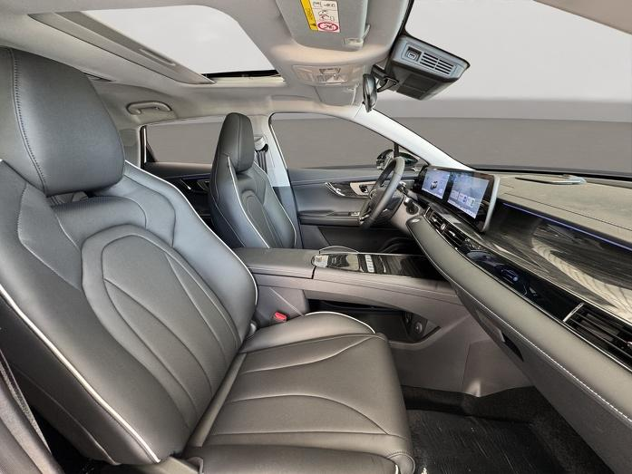

Vos recomendás el servicio
Cuando un cliente quiere renovar el interior de su vehículo, le presentás la propuesta de Davs Tapizados y lo ponés en contacto con nosotros.
Programa de Puntos de Atención
Davs Tapizados fabrica e instala fundas automotrices personalizadas. Como Punto de Atención, solo presentás la propuesta a tus clientes; nosotros nos ocupamos de todo el proceso.

Modelo simple y complementario
Un Punto de Atención es un negocio aliado que recomienda los servicios de Davs Tapizados a sus clientes. Nosotros nos encargamos del resto.
Cuando un cliente quiere renovar el interior de su vehículo, le presentás la propuesta de Davs Tapizados y lo ponés en contacto con nosotros.
Nos encargamos del asesoramiento, la fabricación de las fundas a medida, la instalación y el seguimiento de cada trabajo.
Ampliás los servicios que ofrecés y tus clientes reciben un trabajo profesional, sin invertir en maquinaria, contratar personal especializado ni cambiar tu actividad principal.
Diseñado para negocios como el tuyo
Sabemos que incorporar un nuevo servicio genera preguntas. Por eso, Davs Tapizados se ocupa del trabajo especializado mientras vos seguís concentrado en tu negocio.
No necesitás cambiar la forma en que trabajás. El programa complementa los servicios que ya ofrecés.
No necesitás comprar maquinaria, contratar personal especializado ni mantener stock para comenzar.
Los trabajos son realizados por Davs Tapizados y cuentan con seguimiento y garantía según nuestras políticas.
Ofrecé una solución adicional a quienes ya confían en tu negocio, sin dejar de enfocarte en tu actividad principal.
Creemos que las mejores alianzas se construyen con trabajo bien hecho, comunicación clara y compromiso en cada servicio.
Una oportunidad para hacer crecer tu negocio
Incorporás una nueva fuente de ingresos mientras Davs Tapizados se ocupa del trabajo especializado.
Cada cliente derivado que concreta un trabajo genera la comisión correspondiente para tu negocio.
Davs Tapizados asesora, presupuesta, fabrica, instala y brinda seguimiento, garantía y postventa.
Mientras tu Punto permanezca activo, las futuras compras de los clientes que derivaste continúan generando oportunidades para tu negocio.
Recibís un Kit Institucional preparado para exhibir la propuesta y ayudarte a presentar el servicio de forma profesional.
Conocé cómo funciona el programa en la práctica antes de integrarte oficialmente como Punto Activo.
Preguntas frecuentes
Respondemos las dudas más comunes antes de comenzar.
No necesitás comprar maquinaria, contratar personal especializado ni mantener stock. Davs Tapizados realiza el trabajo técnico mientras vos incorporás el servicio a tu negocio.
No. Davs Tapizados se encarga del asesoramiento, el presupuesto, la fabricación, la instalación, la garantía y la atención postventa.
La garantía y la atención postventa son responsabilidad de Davs Tapizados. Si aparece un inconveniente relacionado con nuestro trabajo, nosotros gestionamos el seguimiento y la resolución.
El programa comienza con un período de prueba de hasta 30 días o las primeras 3 ventas, lo que ocurra primero. Al finalizar, evaluaremos la experiencia y la posible incorporación del comercio como Punto Activo.
Sí. Tanto Davs Tapizados como el Punto de Atención pueden finalizar la colaboración en cualquier momento comunicándolo a la otra parte. Al finalizar, deberá devolverse el Kit Institucional.
Solo tenés que escribirnos por WhatsApp. Coordinaremos una reunión para conocer tu negocio, responder tus consultas y explicarte el programa. Si ambas partes están de acuerdo, comenzaremos el período de prueba.